ECHO: Efficient KV Cache Offloading with Lossless Prefetching for Serving Native Sparse Attention LLMs
总结
原生稀疏注意力（Native Sparse Attention）为大语言模型（LLM）的长上下文推理提供了兼顾效率与精度的方案，但KV缓存的内存占用随上下文长度线性增长，GPU HBM容量成为限制并发和吞吐的瓶颈。ECHO是一个面向原生稀疏注意力LLM的服务系统，通过KV缓存卸载（offloading）和无损预取（lossless prefetching）来突破GPU显存限制。
As-is: 当前的基线方法（如SGLang、vLLM等主流服务框架）在GPU HBM中保存全部KV缓存，面对长上下文请求时显存迅速耗尽。例如，DeepSeek-V3.2部署在8×H200（141GB）上时，单个DP worker仅能容纳约655K tokens，最多同时服务6个100K token的请求。现有的动态KV缓存卸载系统（如InfiniGen、FreeKV、CLO）虽然支持token级卸载，但存在两大痛点：（1）缓存管理依赖动态张量切片/拼接，与CUDA Graph不兼容，导致解码阶段管理开销大、内核启动频繁；（2）为缓解recall开销而采用的预取策略依赖层间或步间相似性近似注意力分数，引入额外的精度损失。SparseServe虽支持服务场景下的动态卸载，但同样无法支持图执行，且仅支持单GPU和8B规模模型。
To-be: ECHO通过两大核心设计实现了高效无损的长上下文服务：（1）图友好的缓存管理器，使用基于张量的元数据和全并行GPU内更新操作（allocate/free/recall），使整个解码路径在单一CUDA Graph中执行，将分配+释放延迟从12µs降至6–8µs（1.6–1.9×降低）；（2）利用索引分数的数值可预测性，实现解码阶段的intra-query无损预取和prefill阶段的inter-query无损预取，并通过warp specialization和软件流水线的融合GPU内核将预取与索引计算重叠。实验显示，ECHO在长上下文负载下生成吞吐量比SGLang和vLLM最高提升2.1×，在轻负载下保持可比的延迟。
---
背景
LLM推理与KV缓存
LLM由多个Transformer层组成，每层包含注意力模块和前馈网络（FFN）。现代LLM采用MoE架构扩展模型容量，参数量可达数千亿甚至万亿级别，对GPU显存造成巨大压力。推理过程分为prefill和decoding两个阶段：prefill处理整个输入序列并计算KV缓存，decoding利用缓存的KV张量自回归地生成后续token。
注意力机制方面，从原始的MHA发展到GQA、MQA，再到DeepSeek采用的MLA（Multi-head Latent Attention）。MLA通过低秩压缩将KV张量降维为潜在向量 $C = W_{DKV}X \in \mathbb{R}^{L \times d_c}$，仅需缓存潜在向量，相比GQA在数学表达能力和效率上均更优。
稀疏注意力
为缓解注意力计算随上下文长度的二次增长，稀疏注意力方法将计算复杂度从 $O(L^2)$ 降至 $O(Lk)$。主要分为两类：
- 训练免微调稀疏注意力（Training-free）：如Quest压缩K块为标签向量估计重要性，InfiniGen通过关键通道近似注意力分数。这类方法简单易部署但存在精度下降。
- 训练时稀疏注意力（Training-time）：如MoBA、NSA、InfLLM-v2等，在预训练或后训练阶段引入稀疏性，使模型参数适应稀疏注意力输出，保持原生精度。
DeepSeek稀疏注意力（DSA） 是目前唯一在大规模模型和真实复杂任务上验证的训练时稀疏注意力方法。它引入轻量级indexer计算token重要性分数：
$$\sum_{h=1}^{H_{index}} w^I_{h,t} \text{ReLU}(q^I_{h,t} k^I_s)$$
其中 $H_{index}=64$，$d_{index}=128$，远小于MLA的 $H=128$、$d_c=512$。DSA还采用FP8精度和ReLU激活进一步提升indexer效率。选择top-k最高分的token进行稀疏MLA计算。
KV缓存卸载
稀疏注意力虽减少了计算和KV访问量，但KV缓存总量仍随上下文线性增长。现有方案将KV缓存卸载到主机DRAM，仅将选中token的KV加载回GPU。InfiniGen和FreeKV利用层间/步间相似性进行有损预取；静态请求级卸载（如Strata）在推理期间不进行驱逐或recall，无法改善运行时HBM使用。
---
问题
ECHO针对两个核心动机/挑战：
动机1：GPU HBM容量成为原生稀疏注意力LLM服务的首要瓶颈
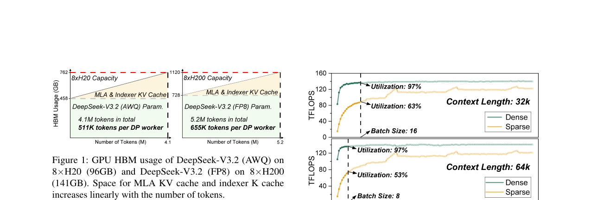
如图1所示，DeepSeek-V3.2部署在8×H20（96GB）和8×H200（141GB）上时，模型参数消耗超过60%的HBM。由于MLA的KV缓存无法通过张量并行划分，需使用数据并行（DP），每个DP worker仅能支持约511K（AWQ on H20）和655K（FP8 on H200）tokens。实际运行时由于CUDA Graph元数据等开销，每个DP worker最多容纳380K tokens，对于100K token的请求仅能服务3–4个并发请求。
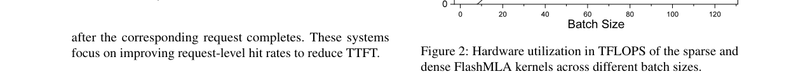
稀疏注意力内核的内在低效进一步加剧了这一问题。图2显示，由于非连续内存访问，稀疏FlashMLA内核的硬件利用率远低于稠密内核。稠密内核在batch size为8时即可充分利用硬件（64K上下文），而稀疏内核需要更大的batch size。在8×H20上，511K token容量最多支持8个64K token的请求，稀疏内核利用率仅53%。
现有动态卸载系统（ArkVale、InfiniGen、FreeKV、CLO）不是完整的服务系统，不支持连续批处理或多GPU推理。SparseServe虽支持服务场景但缓存管理低效且不兼容图执行。
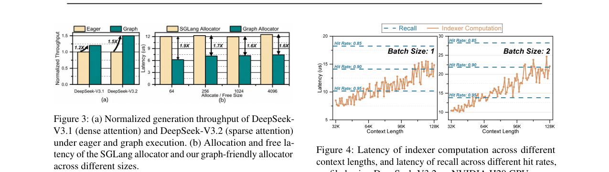
图执行对原生稀疏注意力模型尤为重要——图执行使DeepSeek-V3.1吞吐提升1.2×，而DeepSeek-V3.2提升1.5×（图3a）。但现有系统（如SGLang）的分配器依赖动态CPU侧控制和动态张量切片/拼接，无法被图捕获。如图3b所示，SGLang分配器一次分配+释放需约12µs，而图友好分配器仅需6–8µs（1.6–1.9×降低）。分段图执行（piecewise graph execution）由于每层都需要驱逐和recall，图在所有层都会断裂，重新引入频繁的CPU控制和内核启动。
动机2：Recall开销显著，但indexer计算提供了预取机会
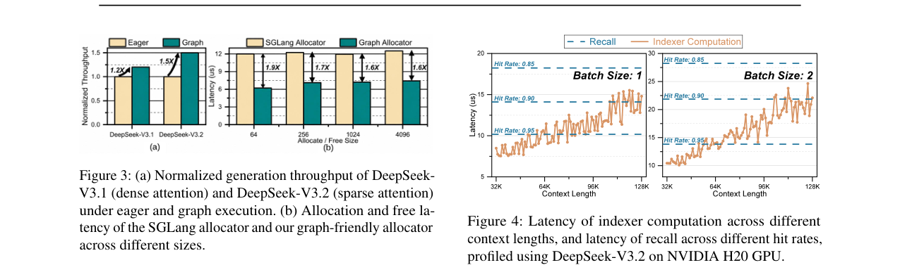
主机-GPU互连带宽（如PCIe 64GB/s）比GPU HBM带宽低1–2个数量级。图4显示，在NVIDIA H20上，当上下文接近100K token且命中率90%时，indexer计算延迟可超过recall延迟。使用更高带宽互连（NVLink/SXM 600–900 GB/s）时，recall开销可进一步降低。由于indexer计算（$O(L^2)$，使用GPU计算资源）和recall（$O(Lk)$，使用PCIe带宽）竞争不同的硬件资源，recall原则上可以与indexer计算重叠。
然而，DSA的top-k选择要求在计算所有前序token的index score后才能确定选中token，recall只能在indexer计算完成后启动，导致PCIe带宽在indexer计算期间空闲。
---
解决方案
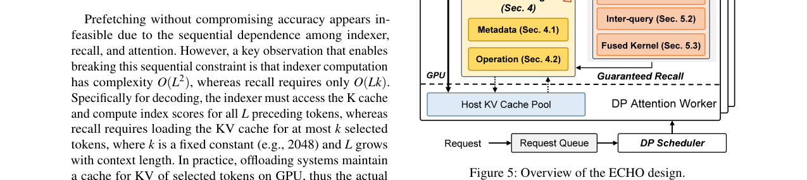
ECHO的总体架构如图5所示。每个DP attention worker在GPU和主机内存上维护KV缓存池，主机池远大于GPU池。indexer的K缓存持久存储在GPU池中，生成的MLA KV缓存同时存储在主机和GPU池中，GPU池作为稀疏注意力中选中token的缓存。ECHO支持PD分离部署，在prefill实例上禁用卸载，在decoding实例上启用。
图友好缓存管理器
管理元数据
ECHO维护以下GPU上的整数张量元数据：
- GPUTokenFree：bitmap，标记GPU池中每个槽位是否空闲
- GPUTokenPriority：每个槽位的驱逐优先级，低优先级先驱逐，空闲槽初始化为-1
- GPUIndicesBuffer：保存allocate和free操作产生的GPU池索引
- GPUTokenToHost：GPU池槽位到主机池索引的映射，空槽初始化为∞
- HostTokenToGPU：主机池槽位到GPU池索引的映射，未缓存于GPU时为∞
所有元数据张量静态预分配且定长（图执行不允许动态创建或变长张量）。关键设计：GPU池按层管理（因不同层选择不同token，缓存状态不同），主机池按模型管理。存储开销为 $4N_H + 13N_G$ 字节，当 $N_H=2M$、$N_G=200K$ 时，每层约10MB，DeepSeek-V3.2共61层总计610MB。
并行图内更新操作
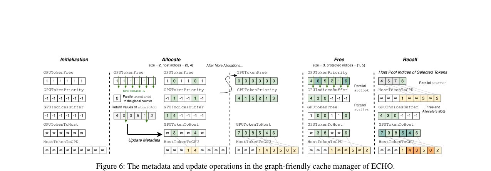
Allocate：GPU线程并行读取GPUTokenFree，有空闲槽的线程通过`atomicAdd`操作全局计数器，返回旧值决定哪些线程分配槽位。随后并行更新元数据：递增新分配token的优先级，建立GPU槽与主机槽的双向映射，输出分配的GPU槽索引到buffer。全程并行且在GPU上执行，避免变长张量。
Free：首先递增受保护GPU槽（稀疏indexer选中的token）的优先级以防驱逐。然后启动并行`argtopk`获取最低优先级槽的索引，输出到GPUIndicesBuffer（避免创建变长张量）。用并行`scatter`更新GPUTokenFree和GPUTokenToHost，HostTokenToGPU相应更新。驱逐时无需将KV传回主机池（生成时已备份）。
Recall：从indexer获取选中token的主机池索引，用并行`scatter`在HostTokenToGPU上识别缺失token，调用free和allocate准备GPU槽位，更新映射并通过统一虚拟内存直接在GPU内核中访问主机内存传输KV缓存，消除主机侧干扰，提高PCIe带宽利用率，保持图执行。
实现基于SGLang，元数据用PyTorch张量维护，并行更新操作用自定义Triton内核实现。
融合无损预取
解码阶段的Intra-query预取
核心洞察：top-k选择中的第k高分在历史index score中具有强可预测性。
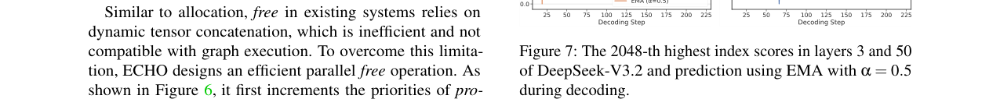
如图7所示，使用指数移动平均（EMA）预测第k（k=2048）高分：$\hat{s}_{t+1} = \alpha \cdot \hat{s}_t + (1-\alpha) \cdot s_t$，$\alpha=0.5$，能准确预测下一步的第k高分。利用预测阈值，在indexer计算期间，任何分数超过预测阈值的token可立即预取，将top-k选择转化为top-p选择，实现无损intra-query预取。
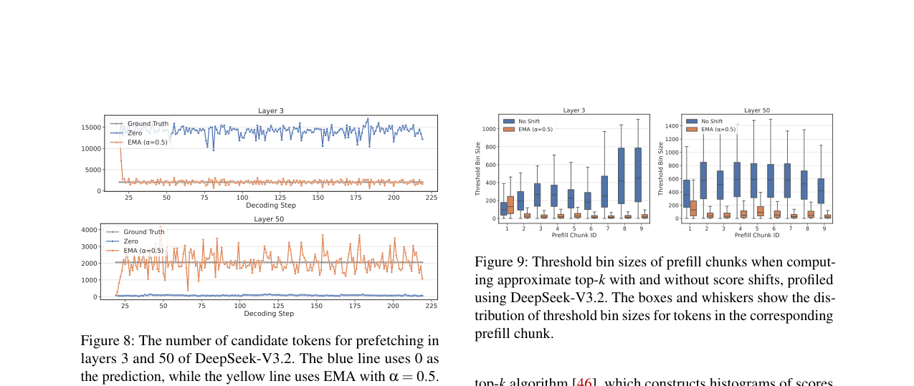
图8显示，候选预取token数量在大多数解码步骤接近k=2048，验证了EMA预测的有效性。当预测阈值低估真实第2048高分时，候选token可能超过2048，ECHO设置预取token数上限并通过全局计数器强制执行。
Prefill阶段的Inter-query预取
Prefill天然支持inter-query预取：indexer将输入Q分块顺序处理，计算完Q块i的分数后，可在计算Q块i+1分数的同时预取Q块i选中的token。
为避免精确top-k降低indexer性能，ECHO使用近似top-k：基于radix select算法，构建256 bin的粗粒度直方图（基于分数最高8位），一轮筛选获得top-k子集。为最小化阈值bin大小，使用前一个prefill chunk末尾token的EMA预测对分数进行偏移。
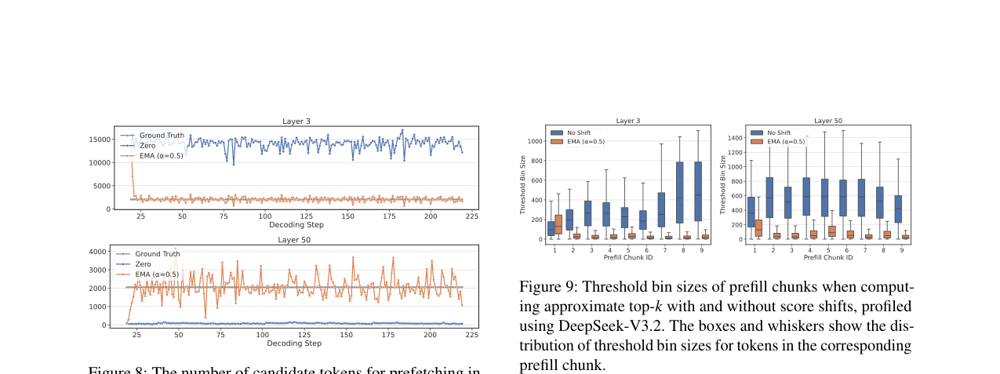
图9显示，使用EMA预测偏移分数后，阈值bin大小显著减小，提升了top-k近似的准确性。
融合预取内核与流水线
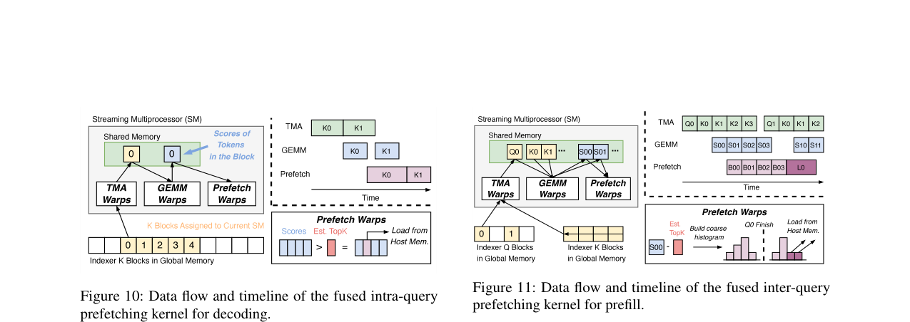
基于DeepGEMM的indexer计算内核，采用warp specialization和软件流水线。解码阶段的融合内核（图10）使用三阶段流水线：TMA warps加载indexer K块到共享内存，GEMM warps计算index score，prefetch warps比较分数与预测阈值并识别可预取token。为防止预取阻塞indexer计算，分配更多流水线阶段给预取，预取token上限与上下文长度成正比。
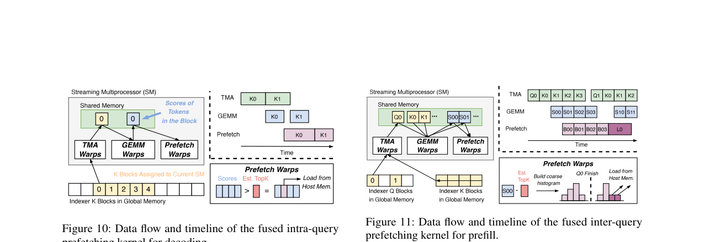
Prefill阶段的融合内核（图11）按Q块划分计算，TMA warps在外层循环加载Q块、内层循环加载K块，GEMM warps输出分数块，prefetch warps构建直方图并在当前Q块计算完成后预取。TMA和GEMM warps继续计算下一个Q块，形成计算与预取重叠的软件流水线。
---
测试结果
实验设置
- 硬件：单节点，8×NVIDIA H20（96GB）GPU，通过64GB/s PCIe Gen5连接主机；224核Intel Xeon Platinum 8480+ CPU，1.5TB DRAM
- 基线：vLLM（v0.11.1）和SGLang（v0.5.4），CUDA 12.9，PyTorch 2.8
- 部署：ECHO和SGLang使用DP8（attention）+TP8（MoE）；vLLM使用TP8（因不支持DP+TP组合，EP会超出HBM）
- 模型：4-bit量化的DeepSeek-V3.2-Exp（indexer和第0,1,2,60层不量化以保持精度），因原始FP8模型无法放入8×H20的HBM
- 工作负载：长上下文负载从InfiniteBench采样318条80K–100K token的请求（共约26M输入token）；短上下文负载从ShareGPT采样
- ECHO配置：主机KV缓存池1.8M tokens，消耗约1000GB主机内存
生成吞吐量
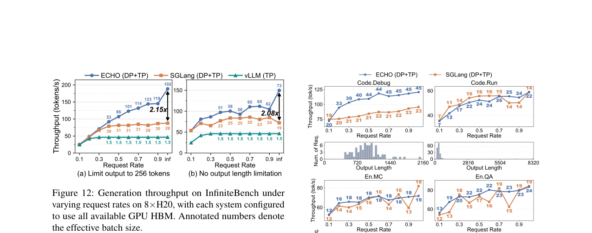
图12展示了在InfiniteBench上不同请求速率下的生成吞吐量（使用全部GPU HBM）。ECHO在所有请求速率下均优于SGLang和vLLM，最高实现2.1×的吞吐量提升。标注的数字表示有效batch size，ECHO得益于KV缓存卸载能够支持更大的batch size。
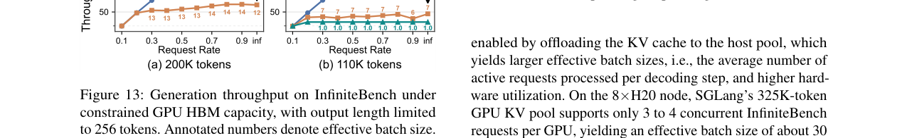
图13展示了在受限GPU HBM容量下的生成吞吐量（输出长度限制为256 token）。在显存受限场景下，ECHO的优势更加明显，因为基线系统受限于HBM容量无法支持大batch size，而ECHO通过卸载突破了这一限制。
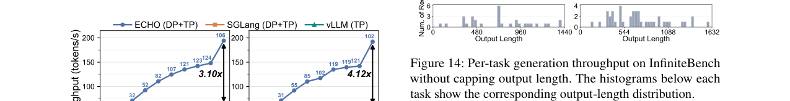
图14展示了不限制输出长度时各任务的生成吞吐量，下方直方图显示对应的输出长度分布。ECHO在不同任务上均表现出稳定的优势。
延迟分析
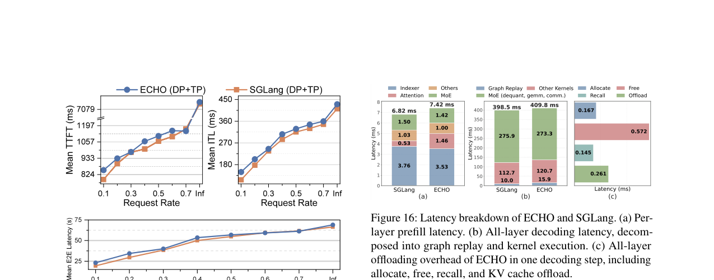
图16展示了ECHO和SGLang的延迟分解。图16a为每层prefill延迟，图16b为所有层解码延迟，分解为graph replay和kernel执行两部分。ECHO的图友好缓存管理器使整个解码路径在单一图中执行，消除了逐层的CPU控制和内核启动开销。
关键结论与局限性
主要成果：
- ECHO在长上下文负载下生成吞吐量比SGLang和vLLM最高提升2.1×，在轻负载下保持可比延迟
- 图友好缓存管理器将分配+释放延迟降低1.6–1.9×，并使整个解码路径在单一CUDA Graph中执行
- 无损预取通过EMA预测和融合流水线内核，在不引入精度损失的前提下有效重叠recall开销
- 元数据存储开销可控：61层共610MB
局限性：
- 实验仅在8×H20单节点上评估，未测试更大规模集群
- 使用4-bit量化模型而非原始FP8模型（因HBM限制），实际生产部署可能需要更大显存的GPU
- 主机KV缓存池1.8M tokens消耗约1000GB主机内存，对主机DRAM容量有较高要求
- 预取上限与上下文长度成正比的设计在极端长上下文（如1M token）下的效果未在论文中验证
- Triton实现虽兼容性更好，但作者指出专用CUDA内核可能进一步降低管理开销